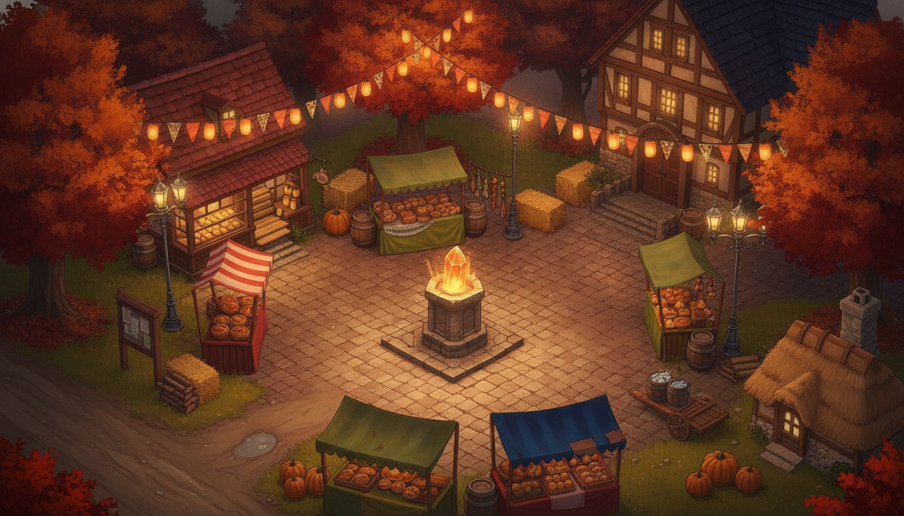

The Square — final pipeline on candidate C
chosen scene → derived occupancy mask → walk-behind props isolated & keyed
1 · the scene (candidate C)

2 · occupancy — green-fill derivation, thresholded + eroded (green = walkable)
3 · walk-behind props, isolated from the scene and chroma-keyed